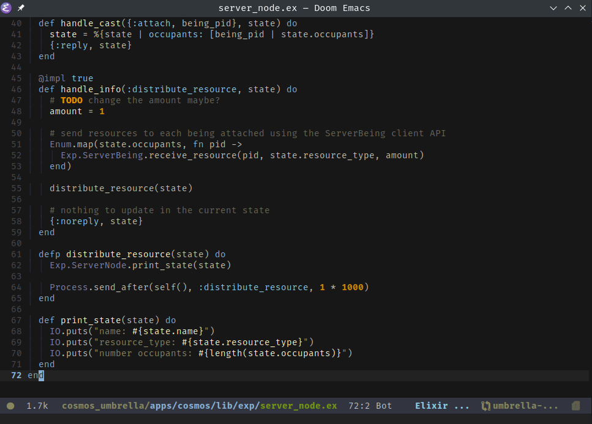

Some use cases of Doom Emacs
-
Using
eshellto quickly switch between code and shellInstalling the
eshellpackage in theinit.elof doom emacs give access to the keybinding (SPC o e) which toggles open the eshell pop-up window. This allows for quick access to a shell without having to switch to another dedicated terminal emulator. 